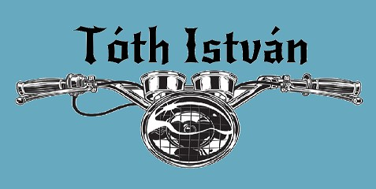
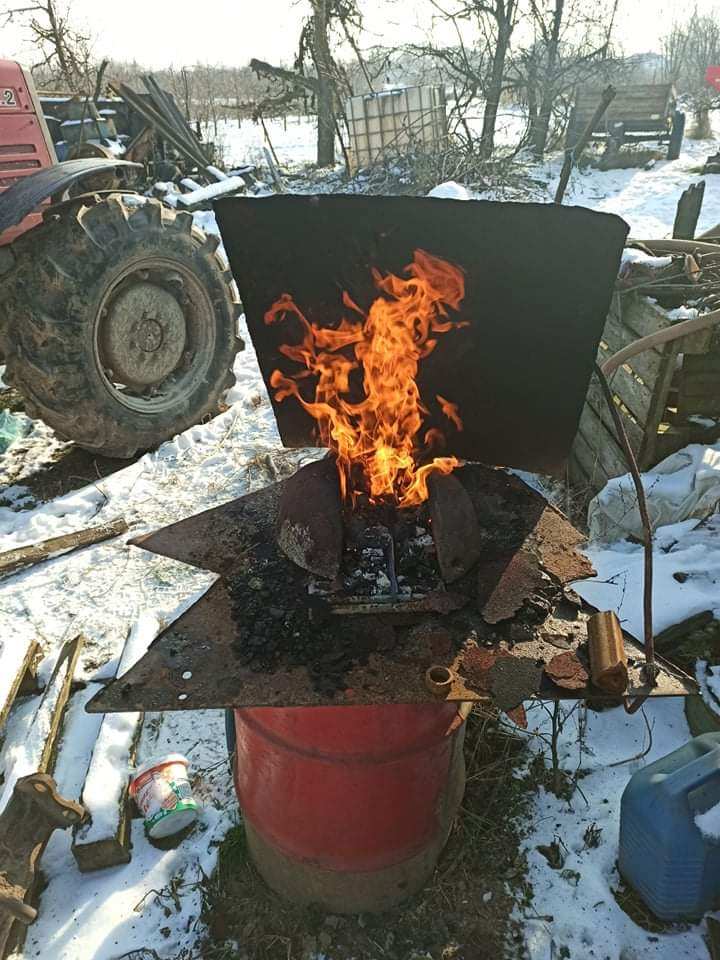
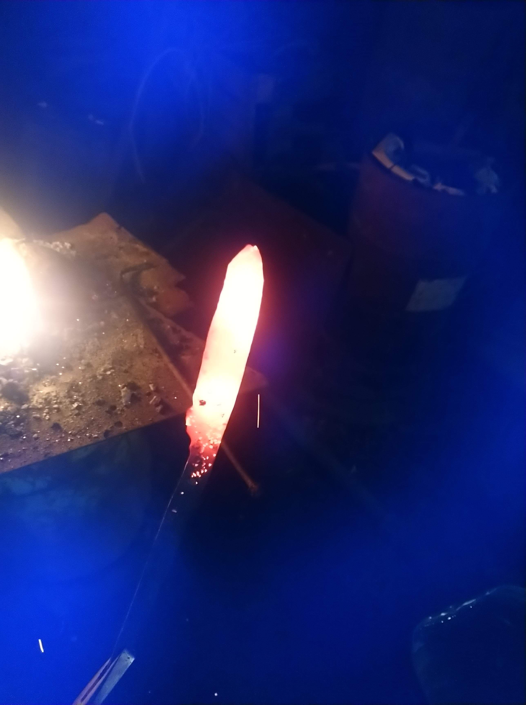
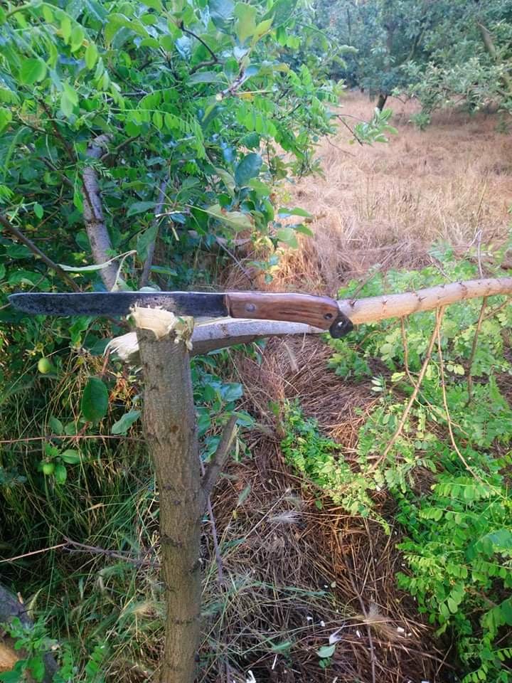

Ezzel a tűzhellyel kezdtem el a kovácsolást.

Első késem hőkezelés előtt.

Ez az eddigi legjobb késem, a fát vele vágtam ki.
Néhány projektem:
Mint minden kisgyerek, én is "kardoztam" botokkal vagy fakardokkal. Úgy döntöttem engedek a bennem élő gyermeknek, célomúl tűztem ki egy kard elkészítését. Volt egy üllőm, pár szerszámom és egy adag lelkesedés. Eddigi kezdetleges munkáimat mutatnám be pár képben.